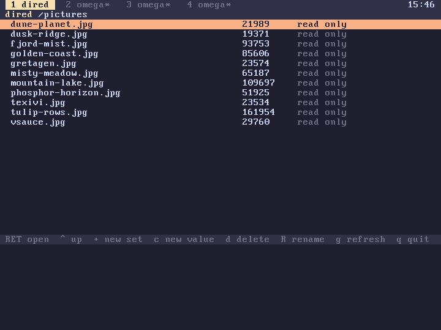

subverge
subvergephi
phi holds named values that are not definitions: notes, text, anything that should have a name and a place of its own. It is a tree of sets. A set holds members, and each member is a value or another set, so /notes/todo is the member todo of the set notes, which is a member of the top set /. A value is a string.
phi is shared by all four tabs. A value written in one tab can be read in the others straight away.
Looking at phi
"buy milk" "/notes/todo" phi-write
phi
phi prints the sets and values you made, indented by depth, and then the two sets that come with the system:
/doc 106 read only
/pictures 23 read only
notes 1 member
todo 8 bytes
/doc has the help pages, one value for each page, holding its text. /pictures has the built-in pictures as JPEG data. Neither can be changed, and nothing can be added to them.
Words
| Word | Effect |
|---|---|
phi |
--, shows what phi holds |
members |
path --, lists the members of a set, sets first |
phi-read |
path -- s, the value at a path |
phi-write |
s path --, stores a string, making the sets on the way |
phi-set |
path --, makes an empty set |
phi-delete |
path --, removes a value, or a set with everything in it |
phi-move |
from to --, renames or moves a value or a set |
phi-edit |
path --, edits a value in scrawl |
phi? |
path -- n, 0 for nothing, 1 for a set, 2 for a value |
dired |
--, browses phi |
dired-at |
path --, browses phi starting at a set |
"/notes/todo" phi-read .
"buy milk"
"/notes" members
todo 8 bytes
"/notes/todo" "/notes/done" phi-move
"/notes/done" phi? .
2
Writing to a path that already holds a value replaces it. Writing to a path whose set doesn't exist yet makes the set. A path that runs through a value, or into a read only set, fails and changes nothing:
"x" "/doc/new" phi-write
! phi-write: that set is read only
phi-edit opens the value in the editor with the path as its name. Saving in the editor and quitting stores the text, and quitting without saving leaves the value as it was.
Paths
A path is names separated by /. A leading / is optional, . stays where it is and .. goes up one set. A name has at most 31 characters, all printable ASCII, and no /. Paths go at most 16 sets deep. Names are compared exactly, with case.
dired
dired shows one set at a time, sets first, with the number of members of a set or the size of a value, and read only where that applies.
| Key | Action |
|---|---|
| C-n, C-p, n, p | move the selection |
| RET, f, e | open a set, or edit a value |
| ^, DEL, u | go up one set |
| + | make a set |
| c | make a value and edit it |
| d | delete the selection, after a question |
| R | rename or move the selection |
| g | read the set again |
| q, ESC | leave |

The questions are asked on the bottom row. Editing a read only value works, but nothing is kept when the editor quits.
Size
phi keeps up to 480 KiB of values, counting the text of each value. A write that would pass that fails with phi is full. The sets themselves take memory from the heap and are not counted.
Saving
On an installed disk phi is written after every change that is made, in a slot of its own, so a reboot keeps it. The format is plain text: a line S and the path for each set, and a line A, the path and the length followed by the bytes for each value, so a value may contain anything, including line breaks. The slot is 512 KiB (disk layout). install and save write it as well.
On the live ISO nothing is saved, and phi starts out with only /doc and /pictures at every boot.
Disks installed before 0.9.6 have no phi slot. Their phi starts empty, and the first change creates it.